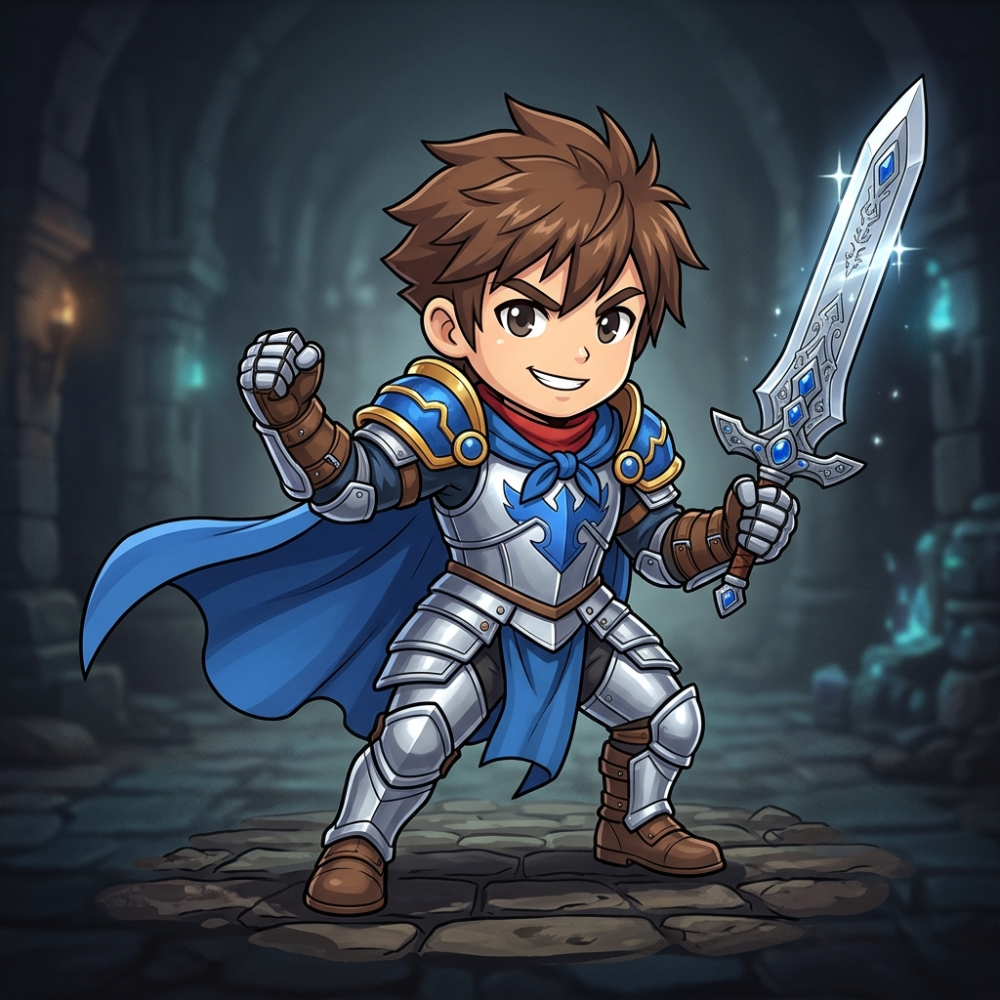
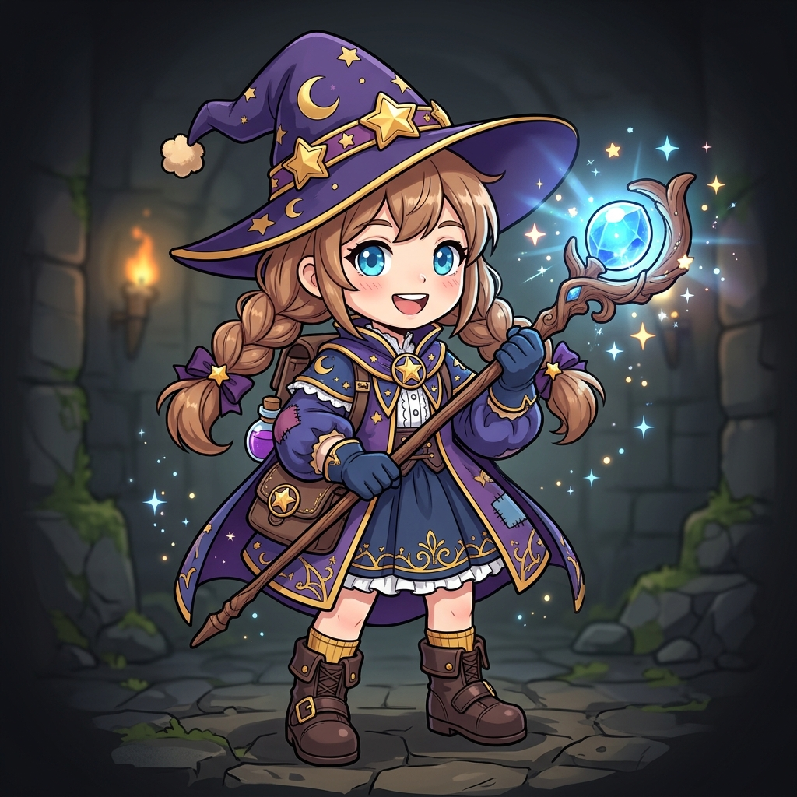
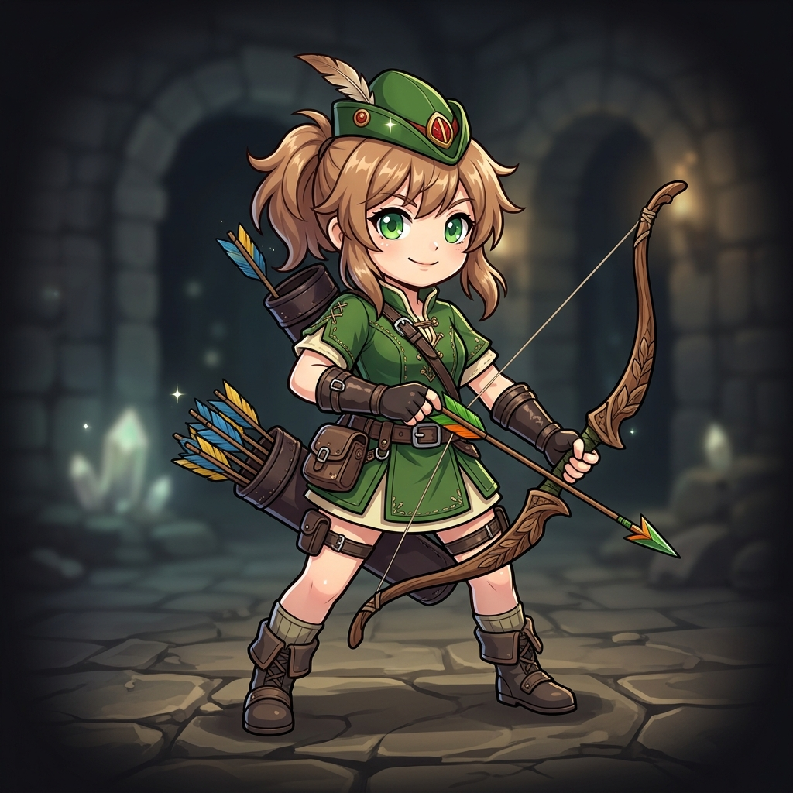

퀘스트 수락하기
머리 위에 노란색 느낌표 '!'가 뜬 NPC는 시작 가능한 퀘스트를 가지고 있습니다. 대화를 걸어 수락하세요. 물음표 '?'는 퀘스트를 완료할 수 있다는 표시입니다.
진행 방향 및 미니맵 확인
퀘스트 창(하단 Quest 버튼)에서 현재 목표를 확인할 수 있습니다. 'Go' 버튼과 화면 우측 상단의 미니맵이 목표 지점과 방향을 친절히 안내합니다.
사냥 및 전리품 수집
대부분의 퀘스트는 몬스터 처치 또는 전리품 수집입니다. 표시된 필드에서 지정된 몬스터를 사냥하여 목표를 달성하세요.
완료 보고 및 빠른 레벨업
지정된 NPC에게 돌아가 경험치(EXP)와 보상을 획득하세요. 퀘스트를 연계하여 진행하면 자연스럽게 다음 사냥터로 레벨업하며 이동하게 됩니다.
핵심 레벨업 팁
엘가일 마을 (Elgaill Town)
주요 NPC: 월리스(Wallace) + 튜토리얼
기본 조작을 익히고 시작 마을 퀘스트를 수행합니다. 핵심: Ominous Accords.
엘가일 주변 지역
NPC: 크러스티, 실피아, 비비
디오라프 다리, 파비올라 서커스, 오염된 숲, 벌집. 핵심: Draff's S.O.S.
바람의 제단 / 프란시스
NPC: 그레이스, 탈론, 엘리아, 캐시
프란시스 마을/부둣가, 팜 비치. 핵심: Elf King's Seal.
프란시스 / 원더플러스
NPC: 오토맨, 츱스 경관, T.R.Z.
1차 전직 달성! 직업에 맞는 1st Advancement 퀘스트를 완수하세요.
프란시스 / 버섯 언덕
NPC: 오토맨, 조디, 메리온
남부 헬렌 숲. 핵심: Find the Dragon Eggs! (경험치 3만).
북부 연구소 (North Lab)
NPC: 김 박사, 오토맨, 코디, 잭 셰프
연구소 연계 퀘스트로 빠른 레벨업 가능.
아벨드라스 신전 (Abeldras)
NPC: 라라, 브래드, T.R.Z.
신전 층별 공략. 핵심: Radio Frequency Snapped II (경험치 6만).
헬렌 숲 (Hellen Forest)
NPC: 크리스, 아니스, 블레이드, 더크
퀘스트 밀집 지역. 핵심: Dawn of Another Legend (경험치 9.2만!).
낙파 늪지 / 베르모스 비행선
NPC: 파르세토, 카시아, 로렌, 제럴드
늪지대와 베르모스 비행선 내부 사냥.
고원 지대 / 베르모스
NPC: 야프, 닐, 로렌, 케이티 캣
핵심 퀘스트: Evidence of the Conspiracy.
침묵의 숲 (Silent Forest)
NPC: 닐, 야프, 로렌, 카도판
핵심: Evil Leader of the Highlands (경험치 4.5만).
하복 / 은신처 부족
NPC: 록키, 하복, 피브롯, 로렌
최상위 엔드게임 콘텐츠. 핵심: Defeat the Foreman (경험치 30만!).
전직 퀘스트는 캐릭터 성장의 가장 중요한 분기점입니다. 30레벨을 달성하면 먼저 프란시스 / 원더플러스의 오토맨(Automan)을 찾아가 전직 가이드를 받으세요. "1st Advancement" 퀘스트를 완료하고 두 가지 전문 특화 직업 중 하나를 선택할 수 있습니다:
인스턴스/포탈 = 맵 내의 전용 포탈을 통해 진입하는 미션 구역입니다. 나머지 장소는 일반 필드 사냥터입니다.

검사 (Swordsman)
전직: 워리어(Warrior) 또는 나이트(Knight)
퀘스트 명: "1st Adv. I: Swordsman" → "1st Adv. II: Swordsman"
시작 NPC: 오토맨(Automan) — 프란시스 마을

마법사 (Mage)
전직: 프리스트(Priest) 또는 위저드(Wizard)
퀘스트 명: "1st Adv. I: Mage" → "1st Adv. II: Mage"
시작 NPC: 오토맨(Automan) — 프란시스 마을

도적 (Thief)
전직: 로그(Rogue) 또는 닌자(Ninja)
퀘스트 명: "1st Adv. I: Thief" → "1st Adv. II: Thief"
시작 NPC: 오토맨(Automan) — 프란시스 마을

스카우트 (Scout)
전직: 아처(Archer) 또는 거너(Gunner)
퀘스트 명: "1st Adv. I: Scout" → "1st Adv. II: Scout"
시작 NPC: 오토맨(Automan) — 프란시스 마을
80레벨에는 2차 전직(퀘스트 시리즈 "Faithful Road")이 시작됩니다. 2차 전직은 선택지가 없으며, 1차 특화 직업이 각 상위 직업으로 승급합니다:
워리어(Warrior) 버서커(Berserker)
트레이너: 제럴드(Zerald) (원더플러스 주유소)
퀘스트 명: "Faithful Road: Warrior"
시작 NPC: 로렌(Lauren) — 헬렌 사무소
사냥: 워크바이저 250마리 (에버우드 목재소) · 임팩트 인큐버스 150마리 (프루네우스 발전소)
재료: 금괴 200개, 미스릴 100개, 빛나는 돌 50개, 방독면 200개, 메가 MP 포션 200개
나이트(Knight) 팔라딘(Paladin)
트레이너: 제럴드(Zerald) (원더플러스 주유소)
퀘스트 명: "Faithful Road: Knight"
시작 NPC: 로렌(Lauren) — 헬렌 사무소
사냥: 목수의 망치 60개 (에버우드 목재소 목수 처치) · 캐논 터틀의 뿔 (프루네우스 발전소)
재료: 은괴 200개, 다이아몬드 100개, 달의 돌 50개, 방독면 200개, 메가 HP 포션 200개
프리스트(Priest) 세인트(Saint)
트레이너: 카시아(Kashia) (산호 해변 III)
퀘스트 명: "Faithful Road: Priest"
시작 NPC: 로렌(Lauren) — 헬렌 사무소
사냥: 목수 100마리 (에버우드 목재소) · 캐논 터틀 20마리 (프루네우스 발전소)
재료: 은괴 200개, 다이아몬드 100개, 달의 돌 50개, 방독면 200개, 메가 HP 포션 200개
위저드(Wizard) 워록(Warlock)
트레이너: 카시아(Kashia) (산호 해변 III)
퀘스트 명: "Faithful Road: Wizard"
시작 NPC: 로렌(Lauren) — 헬렌 사무소
사냥: 임팩트 인큐버스 120마리 (발전소) · 아큐버스 250마리 (낙파 늪지 IV–VI)
재료: 금괴 200개, 루비 100개, 태양의 돌 50개, 방독면 200개, 메가 MP 포션 200개
로그(Rogue) 네이브(Knave)
트레이너: 루크(Luke) (원더플러스 옥상)
퀘스트 명: "Faithful Road: Rogue"
시작 NPC: 로렌(Lauren) — 헬렌 사무소
임무: 임팩트 인큐버스의 뿔 50개 (발전소) · 라무펠 고원 야프쿤 캠프의 야프(Yaf)와 대화
재료: 금괴 200개, 철괴 100개, 태양의 돌 50개, 방독면 200개, 메가 MP 포션 200개
닌자(Ninja) 어쌔신(Assassin)
트레이너: 루크(Luke) (원더플러스 옥상)
퀘스트 명: "Faithful Road: Ninja"
시작 NPC: 로렌(Lauren) — 헬렌 사무소
임무: 해머맨 30마리 (베르모스 비행선 III) · 라무펠 고원의 야프(Yaf)와 대화
재료: 은괴 200개, 에메랄드 100개, 어둠의 돌 50개, 방독면 200개, 메가 HP 포션 200개
아처(Archer) 레인저(Ranger)
트레이너: 울프(Wolf) (야자수 공원 I)
퀘스트 명: "Faithful Road: Archer"
시작 NPC: 로렌(Lauren) — 헬렌 사무소
사냥: 커팅머신 200마리 (목재소) · 아이언 거너 100마리 (낙파 늪지 폐기장 II–III)
재료: 은괴 200개, 에메랄드 100개, 빛나는 돌 50개, 방독면 200개, 메가 HP 포션 200개
거너(Gunner) 건슬링거(Gunslinger)
트레이너: 울프(Wolf) (야자수 공원 I)
퀘스트 명: "Faithful Road: Gunner"
시작 NPC: 로렌(Lauren) — 헬렌 사무소
사냥: 데빌트론 60마리 (낙파 늪지) · 캐논 터틀의 뿔 (발전소)
재료: 금괴 200개, 미스릴 100개, 어둠의 돌 50개, 방독면 200개, 메가 MP 포션 200개